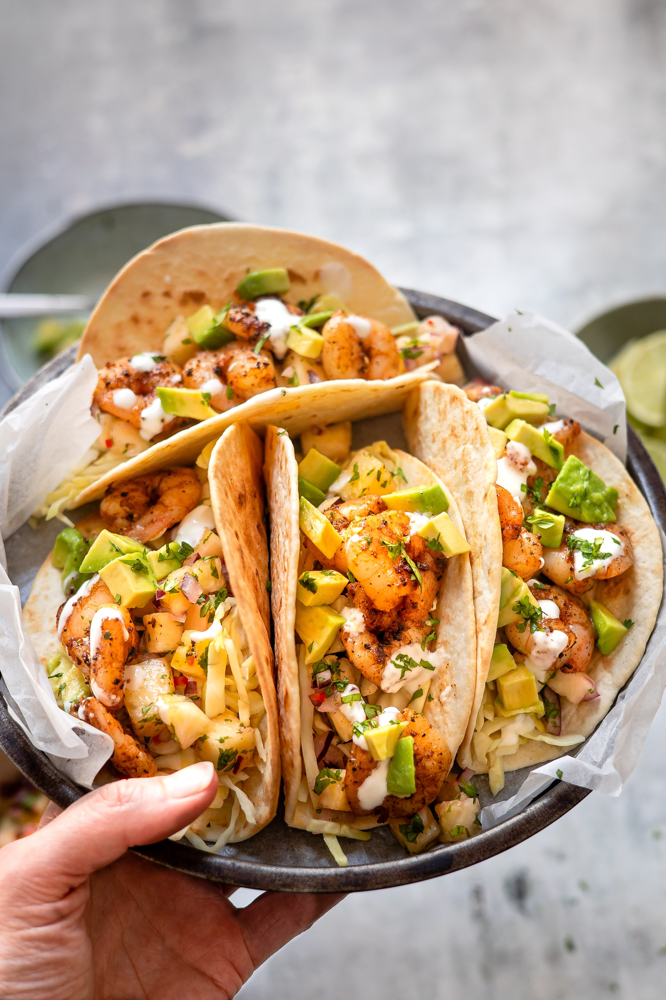

Taco

Description
The classic that once upon a time took the country by storm.
Traditional taco with a norwegian twist. Always a pleasure to invite friends for this social dish.
Ingredients
- 4x Tortillas
- 200g Meat
- 1pc Taco spices
- 1spoon Olive oil
- 0.75dl Water
- 1 Salad
- 1 Tomato
- 0.5 Corn
- 1 Cucumber
- Tacosauce
- Cheese
- Guacamole
- Avocado
Steps
- Heat meat in a pan with oil
- Add spicemix, water and let it sizzle on low heat for 10 minutes
- Add the tortillas in foil, and add to a pre-heated oven at 200 degrees for 2-3 minutes
- Serve with sauce, guacamole and a delicious salad & cheese